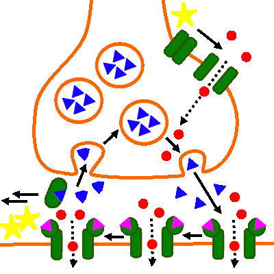

Erregungsübertragung (chemisch): Drogen- und Giftwirkung
Muscarin

Abb. 1: Wirkung von Muscarin
- Muscarin blockert die transmitterabhängigen Natriumionenkanäle im geöffneten Zustand.
- Es kommt zu einer verstärkten Depolarisation an der postsynaptischen Membran.

Abb. 2: Zum Vergleich: Normaler Erregungsübertragungszyklus